Brand Guidelines
The CDMX v6 design system, in one document. Pulled from the original merkpaspoort, implemented in code, and shown live where possible. This is the reference for anyone building, writing, or designing under CDMX.
Where the merkpaspoort is the philosophy, this is the machine. Every token, component and rule you see below is the same set the production website runs on.
What is CDMX
A one-person growth consultancy that combines Digital Growth, Business Strategy, and AI & Automation. One operator. Three domains deep. Retainer-only. One client at a time.
C · D · M · x
Four letters. One operating system. The x is where the other three compound into something no single specialist can replicate.


Vier letters. Eén besturingssysteem. De x is waar de andere drie compounderen tot iets dat geen specialist alleen kan repliceren.
Explorer + Sage
Two archetypes, woven together. Explorer drives forward; Sage grounds in evidence.
- Onafhankelijk & autonoom
- Niet bang voor het onbekende
- Zoekt mogelijkheden waar anderen muren zien
- Bouwt liever dan praat
- Gaat dieper dan comfortabel
- Data-gedreven, niet mening-gedreven
- Deelt inzichten, geen oppervlakkig advies
- Vertrouwt op bewezen resultaten
THE DOTS.
COMPOUND
THE RESULTS.
The compound effect
I connect dots that don't want to be connected.
Growth people don't speak AI.
AI people don't think in business models.
Strategists rarely get their hands dirty enough to know what actually works.
I speak all three.
Start from business outcomes. Always. Then figure out which combination of growth, strategy, and AI gets us there — and build it.
The compound effect.
Palette
Five brand colours plus a six-step warm neutral scale. Dark is the default canvas; warm white carries body copy; yellow is the accent that jumps.
Hanken Grotesk
One variable typeface carries everything. Weight 900 is exclusive to hero. Mono is reserved for metadata, labels and coordinates.
Logo varianten
Four logo expressions. Always monochrome — black on light, white on dark. Never coloured.

Rules. Always on dark — invert for light contexts. Monochrome only — never colour. The individual letters may appear at scale for the C·D·M·x philosophy; the "x" is the only element allowed to carry yellow.
Contourlijnen
Organische topografische lijnen — geïnspireerd op hoogtekaarten. Symboliseren de verbindingen die CDMX legt.



Gebruik als achtergrondtextuur op donkere vlakken. Altijd op ware verhoudingen — nooit vervormd. Opacity tussen 0.2 en 0.5 afhankelijk van context.
Multiplied depth.
Three domains, one operator. Depth in each unlocks compounding across all.
Hoe CDMX spreekt
Four principles. Each one paired with a real line that ships on the site.
Visuele taal
Four non-negotiables that keep the visual language coherent across every surface.
Merkregels
The short list. If in doubt, lean on these before shipping.
Do
- Gebruik het logo altijd op donkere achtergrond (invert voor wit)
- Behoud de verhoudingen van patterns — nooit stretchen
- Weight 900 is exclusief voor hero titels
- Copper altijd voor decoratieve prefix-lijnen
- Mono font voor metadata en labels
- Minimaal contrast 4.5:1 voor alle leesbare tekst
Don't
- Geen grijstinten op gele achtergrond (contrast faalt)
- Nooit het logo in kleur gebruiken — altijd zwart of wit
- Geen gradiënten of schaduwen op tekst
- Tekst nooit kleiner dan 0.6rem (9.6px)
- Geen ronde hoeken groter dan 3px
- Nooit meer dan drie kleuren tegelijk combineren
Components in use
The production homepage assembles these seven components. Each links back to the live section on /.